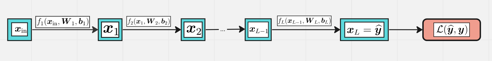

Multilayer Perceptron (MLP)#
In a nutshell, a neural network is a parametric function
where
\(n_{\mathrm{in}}\) is the number of input features (e.g. \(784\) for MNIST dataset)
\(n_{\mathrm{out}}\) is the number of output features (e.g. \(1\) for binary classification or regression, \(10\) for MNIST)
\(\boldsymbol \theta \in \mathbb R^{D}\) is a vector of learnable parameters
Layers#

More specifically, a neural network is a composition of layers:
\(n_i\) is the size of \(i\)-th layer, \(n_0 = n_{\mathrm{in}}\), \(n_L = n_{\mathrm{out}}\)
\(\boldsymbol \theta_i\) are parameters of \(i\)-th layer, \(\boldsymbol \theta = (\boldsymbol \theta_1,\ldots, \boldsymbol \theta_L)\)
\(\boldsymbol x_i = f^{(i)}_{\boldsymbol \theta_{i}}(\boldsymbol x_{i-1})\) is the representation of \(i\)-th layer, \(\boldsymbol x_i \in \mathbb R^{n_i}\)
Layers of MLP#

Each MLP layer looks like
where
\(\boldsymbol W_{i}\) is a matrix of the shape \(n_{i-1}\times n_i\)
\(\boldsymbol x_i, \boldsymbol b_i \in \mathbb R^{n_i}\) and \(\boldsymbol x_{i-1} \in \mathbb R^{n_{i-1}}\) are row-vectors!
\(\psi_i(t)\) is an activation function which acts element-wise
Q. What is \(\boldsymbol\theta_i\) in this notation of MLP layer?
Sometimes activatons are considered as single layers with no parameters. Then each layer of MLP splits into two:
linear (dense) layer: \(\boldsymbol z_i = \boldsymbol x_{i-1} \boldsymbol W^{(i)} + \boldsymbol b^{(i)} \)
activation layer: \(\quad \boldsymbol x_i = \psi_i(\boldsymbol z_{i})\)
Activations#
The most popular activation functions (nonlinearities):
sigmoid: \(\sigma(x) = \frac 1{1+e^{-x}}\)
hyperbolic tangent: \(\tanh(x) = \frac{e^x - e^{-x}}{e^x + e^{-x}}\)
Rectified Linear Unit: $\( \mathrm{ReLU}(x) = x_+ = \max\{x, 0\} \)$
plot_activations(-5, 5, -2, 2)
Learning objectives#
Binary classification#
The output of the neural network is usually a number from \([0, 1]\) which is the probability of the positive class
Sigmoid is the typical choice for the output layer: $\( \widehat y = x_L = x_{\mathrm{out}} = \sigma(x_{L-1}) \)$
Loss function: \(\mathcal L(\widehat y, y) = -y\log(\widehat y) -(1-y) \log(1-\widehat y)\)
Multilass classification#
For \(K\) classes the output contains \(K\) numbers \((\widehat y_1, \ldots, \widehat y_K)\)
\(\widehat y_k\) is the probability of class \(k\)
Now the output of the neural network is
Cross entropy loss#
Q. Let \(K=2\). Does this formula gives the same result as the loss function from binary classification? Why?
Regression#
Predict a real number \(\widehat y = x_L = x_{\mathrm{out}}\)
The loss function is usually quadratic:
Training of MLP#
Q. How many learnable parameters does this MLP have?
A. \(\boldsymbol W_i\) has shape \(n_{i-1}\times n_i\), \(\boldsymbol b_i\) has length \(n_i\), so…
The goal is to minimize the loss function with respect to parameters \(\boldsymbol \theta\),
where $\( \boldsymbol \theta = (\boldsymbol W_1, \boldsymbol b_1, \boldsymbol W_2, \boldsymbol b_2, \ldots, \boldsymbol W_L, \boldsymbol b_L) \)$
Let’s use the standard technique — the gradient descent!
Start from some random parameters \(\boldsymbol \theta_0\)
Given a training sample \((\boldsymbol x, \boldsymbol y)\), do the forward pass and get the output \(\boldsymbol {\widehat y} = F_{\boldsymbol \theta}(\boldsymbol x)\)
Calculate the loss function \(\mathcal L_{\boldsymbol\theta}(\boldsymbol {\widehat y}, \boldsymbol y)\) and its gradient $\( \nabla_{\boldsymbol\theta}\mathcal L_{\boldsymbol\theta}(\boldsymbol {\widehat y}, \boldsymbol y) \)$
Update the parameters:
Go to step 2 with next training sample
But how to calculate the gradients
The error backpropagation technique is used for this purpose.
Batch training#
It is compuationally inefficient to update all the parameters every time after passing a training sample
Instead, take a batch of size \(B\) of training samples at a time and form the matrix \(\boldsymbol X_{\mathrm{in}}\) if the shape \(B\times n_0\).
Now each hidden representation is a matrix of the shape \(B \times n_i\):
The output also has \(B\) rows. For instance, in the case of multiclassification task we have
Back propagation#
Short summary#
Make the forward pass and calculate all hidden representations along with output and loss function: $\( \boldsymbol X_1, \boldsymbol X_2, \ldots \boldsymbol X_{L-1}, \boldsymbol X_L = \boldsymbol{\widehat Y}, \mathcal L(\boldsymbol {\widehat Y}, \boldsymbol Y) \)$
Calculate the gradient of the loss function with respect to the output: $\( \nabla_{\boldsymbol X_L} \mathcal L(\boldsymbol X_L, \boldsymbol Y) \)$
Make the backward pass from \(\boldsymbol X_{L-1}\) to \(\boldsymbol X_1\) and calculate \(\nabla_{\boldsymbol X_i}\mathcal L\), \(\nabla_{\boldsymbol W_i} \mathcal L\), \(\nabla_{\boldsymbol B_i}\mathcal L\) on each step
Backward pass through one layer#

Practice time!#
Implement your own MLP using numpy and train it on MNIST!
class Layer:
"""
A building block. Each layer is capable of performing two things:
- Process input to get output: output = layer.forward(input)
- Propagate gradients through itself: grad_input = layer.backward(input, grad_output)
Some layers also have learnable parameters which they update during layer.backward.
"""
def __init__(self):
"""Here you can initialize layer parameters (if any) and auxiliary stuff."""
# A dummy layer does nothing
pass
def forward(self, input):
"""
Takes input data of shape [batch, input_units], returns output data [batch, output_units]
"""
# A dummy layer just returns whatever it gets as input.
return input
def backward(self, input, grad_output):
"""
Performs a backpropagation step through the layer, with respect to the given input.
To compute loss gradients w.r.t input, you need to apply chain rule (backprop):
d loss / d x = (d loss / d layer) * (d layer / d x)
Luckily, you already receive d loss / d layer as input, so you only need to multiply it by d layer / d x.
If your layer has parameters (e.g. dense layer), you also need to update them here using d loss / d layer
"""
# The gradient of a dummy layer is precisely grad_output, but we'll write it more explicitly
num_units = input.shape[1]
d_layer_d_input = np.eye(num_units)
return np.dot(grad_output, d_layer_d_input) # chain rule
Nonlinearity layer#
This is the simplest layer you can get: it simply applies a nonlinearity to each element of your network. Recall that
and the same rule works when \(x\) is a vector or a matrix.
class ReLU(Layer):
def __init__(self):
"""ReLU layer simply applies elementwise rectified linear unit to all inputs"""
pass
def forward(self, input):
"""Apply elementwise ReLU to [batch, input_units] matrix"""
output = np.maximum(input, 0)
return output
def backward(self, input, grad_output):
"""Compute gradient of loss w.r.t. ReLU input"""
relu_grad = input > 0
# Note that this is exactly the Hadamard product
return grad_output*relu_grad
# some tests
from util import eval_numerical_gradient
x = np.linspace(-1,1,10*32).reshape([10,32])
l = ReLU()
grads = l.backward(x,np.ones([10,32])/(32*10))
numeric_grads = eval_numerical_gradient(lambda x: l.forward(x).mean(), x=x)
assert np.allclose(grads, numeric_grads, rtol=1e-3, atol=0),\
"gradient returned by your layer does not match the numerically computed gradient"
Dense layer#
Now let’s build something more complicated. Unlike nonlinearity, a dense layer actually has something to learn.
A dense layer applies affine transformation. In a vectorized form, it can be described as:
where
\(\boldsymbol X\) is an object-feature matrix of shape [batch_size, num_features],
\(\boldsymbol W\) is a weight matrix [num_features, num_outputs]
and \(\boldsymbol b\) is a vector of num_outputs biases.
Both \(\boldsymbol X\) and \(\boldsymbol b\) are initialized during layer creation and updated each time backward is called.
Q. What is the shape of \(\boldsymbol X \boldsymbol W\)? How can we add \(\boldsymbol b\) to it?
A. Broadcasting!
class Dense(Layer):
def __init__(self, input_units, output_units, learning_rate=0.1):
"""
A dense layer is a layer which performs a learned affine transformation:
f(X) = XW + b
"""
self.learning_rate = learning_rate
# initialize weights with small random numbers. We use normal initialization,
# but surely there is something better. Try this once you got it working: http://bit.ly/2vTlmaJ
self.weights = np.random.randn(input_units, output_units)*0.01
self.biases = np.zeros(output_units)
def forward(self,input):
"""
Perform an affine transformation:
f(X) = XW + b
input shape: [batch, input_units]
output shape: [batch, output units]
"""
return input @ self.weights + self.biases
def backward(self, input, grad_output):
# compute d f / d x = d f / d dense * d dense / d x
# where d dense/ d x = weights transposed
grad_input = grad_output @ self.weights.T
# compute gradient w.r.t. weights and biases
grad_weights = input.T @ grad_output
grad_biases = grad_output.sum(axis=0)
assert grad_weights.shape == self.weights.shape and grad_biases.shape == self.biases.shape
# Here we perform a stochastic gradient descent step.
# Later on, you can try replacing that with something better.
self.weights = self.weights - self.learning_rate * grad_weights
self.biases = self.biases - self.learning_rate * grad_biases
return grad_input
Testing the dense layer#
Here we have a few tests to make sure your dense layer works properly. You can just run them, get 3 “well done”s and forget they ever existed.
… or not get 3 “well done”s and go fix stuff. If that is the case, here are some tips for you:
Make sure you compute gradients for W and b as sum of gradients over batch, not mean over gradients. Grad_output is already divided by batch size.
If you’re debugging, try saving gradients in class fields, like “self.grad_w = grad_w” or print first 3-5 weights. This helps debugging.
If nothing else helps, try ignoring tests and proceed to network training. If it trains alright, you may be off by something that does not affect network training.
l = Dense(128, 150)
assert -0.05 < l.weights.mean() < 0.05 and 1e-3 < l.weights.std() < 1e-1,\
"The initial weights must have zero mean and small variance. "\
"If you know what you're doing, remove this assertion."
assert -0.05 < l.biases.mean() < 0.05, "Biases must be zero mean. Ignore if you have a reason to do otherwise."
# To test the outputs, we explicitly set weights with fixed values. DO NOT DO THAT IN ACTUAL NETWORK!
l = Dense(3,4)
x = np.linspace(-1,1,2*3).reshape([2,3])
l.weights = np.linspace(-1,1,3*4).reshape([3,4])
l.biases = np.linspace(-1,1,4)
assert np.allclose(l.forward(x),np.array([[ 0.07272727, 0.41212121, 0.75151515, 1.09090909],
[-0.90909091, 0.08484848, 1.07878788, 2.07272727]]))
print("Well done!")
Well done!
# To test the grads, we use gradients obtained via finite differences
from util import eval_numerical_gradient
x = np.linspace(-1,1,10*32).reshape([10,32])
l = Dense(32,64,learning_rate=0)
numeric_grads = eval_numerical_gradient(lambda x: l.forward(x).sum(),x)
grads = l.backward(x,np.ones([10,64]))
assert np.allclose(grads,numeric_grads,rtol=1e-3,atol=0), "input gradient does not match numeric grad"
print("Well done!")
Well done!
#test gradients w.r.t. params
def compute_out_given_wb(w,b):
l = Dense(32,64,learning_rate=1)
l.weights = np.array(w)
l.biases = np.array(b)
x = np.linspace(-1,1,10*32).reshape([10,32])
return l.forward(x)
def compute_grad_by_params(w,b):
l = Dense(32,64,learning_rate=1)
l.weights = np.array(w)
l.biases = np.array(b)
x = np.linspace(-1,1,10*32).reshape([10,32])
l.backward(x,np.ones([10,64]) / 10.)
return w - l.weights, b - l.biases
w,b = np.random.randn(32,64), np.linspace(-1,1,64)
numeric_dw = eval_numerical_gradient(lambda w: compute_out_given_wb(w,b).mean(0).sum(),w )
numeric_db = eval_numerical_gradient(lambda b: compute_out_given_wb(w,b).mean(0).sum(),b )
grad_w,grad_b = compute_grad_by_params(w,b)
assert np.allclose(numeric_dw,grad_w,rtol=1e-3,atol=0), "weight gradient does not match numeric weight gradient"
assert np.allclose(numeric_db,grad_b,rtol=1e-3,atol=0), "weight gradient does not match numeric weight gradient"
print("Well done!")
Well done!
The loss function#
Since we want to predict probabilities, it would be logical for us to define softmax nonlinearity on top of our network and compute loss given predicted probabilities. However, there is a better way to do so.
Go back to the cross entropy loss
Here \(\boldsymbol{\widehat Y} = \mathrm{SoftMax}(\boldsymbol X_{L-1})\) applied row-by-row. The output of previous layer \(\boldsymbol X_{L-1}\) is called logits. Let’s denote them \(\boldsymbol A\), then
The expression in brackets is called Log-softmax and it’s better than naive log(softmax) in all aspects:
Better numerical stability
Easier to get derivative right
Marginally faster to compute
So why not just use log-softmax throughout our computation and never actually bother to estimate probabilities.
Here you are! We’ve defined the both loss functions for you so that you could focus on neural network part.
def softmax_crossentropy_with_logits(logits, reference_answers):
"""Compute crossentropy from logits[batch, n_classes] and ids of correct answers"""
logits_for_answers = logits[np.arange(len(logits)), reference_answers]
xentropy = - logits_for_answers + np.log(np.sum(np.exp(logits),axis=-1))
return xentropy
def grad_softmax_crossentropy_with_logits(logits, reference_answers):
"""Compute crossentropy gradient from logits[batch,n_classes] and ids of correct answers"""
ones_for_answers = np.zeros_like(logits)
ones_for_answers[np.arange(len(logits)),reference_answers] = 1
softmax = np.exp(logits) / np.exp(logits).sum(axis=-1,keepdims=True)
return (- ones_for_answers + softmax) / logits.shape[0]
logits = np.linspace(-1,1,500).reshape([50,10])
answers = np.arange(50)%10
softmax_crossentropy_with_logits(logits,answers)
grads = grad_softmax_crossentropy_with_logits(logits,answers)
numeric_grads = eval_numerical_gradient(lambda l: softmax_crossentropy_with_logits(l,answers).mean(),logits)
assert np.allclose(numeric_grads,grads,rtol=1e-3,atol=0), "The reference implementation has just failed. Someone has just changed the rules of math."
Full network#
Now let’s combine what we’ve just built into a working neural network. As we announced, we’re gonna use this monster to classify handwritten digits, so let’s get them loaded.
from sklearn.datasets import fetch_openml
X, Y = fetch_openml('mnist_784', return_X_y=True, parser='auto')
X = X.astype(float).values / 255
Y = Y.astype(int).values
def plot_digits(X, y_true, y_pred=None, n=4, random_state=123):
np.random.seed(random_state)
indices = np.random.choice(np.arange(X.shape[0]), size=n*n, replace=False)
plt.figure(figsize=(10, 10))
for i in range(n*n):
plt.subplot(n, n, i+1)
plt.xticks([])
plt.yticks([])
plt.grid(False)
plt.imshow(X[indices[i]].reshape(28, 28), cmap='gray')
# plt.imshow(train_images[i], cmap=plt.cm.binary)
if y_pred is None:
title = str(y_true[indices[i]])
else:
title = f"y={y_true[indices[i]]}, ŷ={y_pred[indices[i]]}"
plt.title(title, size=20)
plt.show()
plot_digits(X, Y)
from sklearn.model_selection import train_test_split
X_train, X_test, y_train, y_test = train_test_split(X, Y, test_size=10000, random_state=42)
X_train, X_val = X_train[:-10000], X_train[-10000:]
y_train, y_val = y_train[:-10000], y_train[-10000:]
X_train.shape, X_val.shape, X_test.shape, y_train.shape, y_val.shape, y_test.shape
((50000, 784), (10000, 784), (10000, 784), (50000,), (10000,), (10000,))
We’ll define network as a list of layers, each applied on top of previous one. In this setting, computing predictions and training becomes trivial.
network = []
network.append(Dense(X_train.shape[1], 392))
network.append(ReLU())
network.append(Dense(392, 196))
network.append(ReLU())
network.append(Dense(196, 10))
def forward(network, X):
"""
Compute activations of all network layers by applying them sequentially.
Return a list of activations for each layer.
Make sure last activation corresponds to network logits.
"""
activations = []
input = X
for layer in network:
input = layer.forward(input)
activations.append(input)
assert len(activations) == len(network)
return activations
def predict(network, X):
"""
Use network to predict the most likely class for each sample.
"""
logits = forward(network, X)[-1]
return logits.argmax(axis=-1)
Backprop#
You can now define the backpropagation step for the neural network. Please read the docstring.
def train(network, X, y):
"""
Train your network on a given batch of X and y.
You first need to run forward to get all layer activations.
You can estimate loss and loss_grad, obtaining dL / dy_pred
Then you can run layer.backward going from last layer to first,
propagating the gradient of input to previous layers.
After you called backward for all layers, all Dense layers have already made one gradient step.
"""
# Get the layer activations
layer_activations = forward(network, X)
layer_inputs = [X] + layer_activations #layer_input[i] is an input for network[i]
logits = layer_activations[-1]
# Compute the loss and the initial gradient
loss = softmax_crossentropy_with_logits(logits,y)
loss_grad = grad_softmax_crossentropy_with_logits(logits,y)
# propagate gradients through network layers using .backward
# hint: start from last layer and move to earlier layers
for i in range(len(network) - 1, -1, -1):
loss_grad = network[i].backward(layer_inputs[i], loss_grad)
return np.mean(loss)
Instead of tests, we provide you with a training loop that prints training and validation accuracies on every epoch.
If your implementation of forward and backward are correct, your accuracy should grow from 90~93% to >97% with the default network.
Training loop#
As usual, we split data into minibatches, feed each such minibatch into the network and update weights.
from tqdm import trange
def iterate_minibatches(inputs, targets, batchsize, shuffle=False):
assert len(inputs) == len(targets)
if shuffle:
indices = np.random.permutation(len(inputs))
for start_idx in trange(0, len(inputs) - batchsize + 1, batchsize):
if shuffle:
excerpt = indices[start_idx:start_idx + batchsize]
else:
excerpt = slice(start_idx, start_idx + batchsize)
yield inputs[excerpt], targets[excerpt]
from IPython.display import clear_output
train_log = []
val_log = []
for epoch in range(15):
for x_batch, y_batch in iterate_minibatches(X_train, y_train, batchsize=32, shuffle=True):
train(network, x_batch, y_batch)
train_log.append(np.mean(predict(network, X_train) == y_train))
val_log.append(np.mean(predict(network, X_val) == y_val))
clear_output()
print("Epoch",epoch)
print("Train accuracy:",train_log[-1])
print("Val accuracy:",val_log[-1])
plt.plot(train_log,label='train accuracy')
plt.plot(val_log,label='val accuracy')
plt.legend(loc='best')
plt.grid()
plt.show()
Epoch 9
Train accuracy: 0.99788
Val accuracy: 0.9788
0%| | 0/1562 [00:00<?, ?it/s]
1%|▋ | 16/1562 [00:00<00:10, 152.70it/s]
2%|█▍ | 36/1562 [00:00<00:08, 177.30it/s]
4%|██▎ | 57/1562 [00:00<00:07, 189.46it/s]
5%|███▏ | 78/1562 [00:00<00:07, 196.52it/s]
6%|████ | 100/1562 [00:00<00:07, 201.75it/s]
8%|████▉ | 121/1562 [00:00<00:07, 202.95it/s]
9%|█████▊ | 144/1562 [00:00<00:06, 209.66it/s]
11%|██████▋ | 165/1562 [00:00<00:06, 200.75it/s]
12%|███████▌ | 186/1562 [00:00<00:06, 199.82it/s]
13%|████████▍ | 208/1562 [00:01<00:06, 205.74it/s]
15%|█████████▏ | 229/1562 [00:01<00:06, 202.82it/s]
16%|██████████ | 250/1562 [00:01<00:06, 201.37it/s]
17%|██████████▉ | 271/1562 [00:01<00:06, 192.74it/s]
19%|███████████▊ | 292/1562 [00:01<00:06, 196.38it/s]
20%|████████████▌ | 313/1562 [00:01<00:06, 199.24it/s]
21%|█████████████▍ | 333/1562 [00:01<00:06, 198.51it/s]
23%|██████████████▏ | 353/1562 [00:01<00:06, 198.55it/s]
24%|███████████████▏ | 376/1562 [00:01<00:05, 205.53it/s]
25%|████████████████ | 397/1562 [00:01<00:05, 206.03it/s]
27%|████████████████▊ | 418/1562 [00:02<00:05, 202.88it/s]
28%|█████████████████▋ | 439/1562 [00:02<00:05, 198.81it/s]
30%|██████████████████▌ | 461/1562 [00:02<00:05, 202.30it/s]
31%|███████████████████▌ | 484/1562 [00:02<00:05, 207.81it/s]
32%|████████████████████▍ | 506/1562 [00:02<00:05, 210.40it/s]
34%|█████████████████████▎ | 528/1562 [00:02<00:04, 212.65it/s]
35%|██████████████████████▏ | 551/1562 [00:02<00:04, 216.24it/s]
37%|███████████████████████ | 573/1562 [00:02<00:04, 213.45it/s]
38%|████████████████████████ | 596/1562 [00:02<00:04, 214.96it/s]
40%|████████████████████████▉ | 619/1562 [00:03<00:04, 217.83it/s]
41%|█████████████████████████▊ | 641/1562 [00:03<00:04, 211.86it/s]
42%|██████████████████████████▋ | 663/1562 [00:03<00:04, 209.24it/s]
44%|███████████████████████████▋ | 685/1562 [00:03<00:04, 211.44it/s]
45%|████████████████████████████▌ | 707/1562 [00:03<00:04, 196.08it/s]
47%|█████████████████████████████▍ | 730/1562 [00:03<00:04, 203.19it/s]
48%|██████████████████████████████▎ | 753/1562 [00:03<00:03, 209.73it/s]
50%|███████████████████████████████▎ | 775/1562 [00:03<00:03, 212.49it/s]
51%|████████████████████████████████▏ | 798/1562 [00:03<00:03, 215.68it/s]
52%|█████████████████████████████████ | 820/1562 [00:04<00:03, 206.48it/s]
54%|█████████████████████████████████▉ | 841/1562 [00:04<00:03, 204.35it/s]
55%|██████████████████████████████████▊ | 862/1562 [00:04<00:03, 203.19it/s]
57%|███████████████████████████████████▌ | 883/1562 [00:04<00:03, 197.25it/s]
58%|████████████████████████████████████▌ | 905/1562 [00:04<00:03, 203.13it/s]
59%|█████████████████████████████████████▍ | 928/1562 [00:04<00:03, 210.09it/s]
61%|██████████████████████████████████████▎ | 950/1562 [00:04<00:02, 211.66it/s]
62%|███████████████████████████████████████▏ | 973/1562 [00:04<00:02, 215.80it/s]
64%|████████████████████████████████████████▏ | 995/1562 [00:04<00:02, 215.27it/s]
65%|████████████████████████████████████████▍ | 1018/1562 [00:04<00:02, 217.31it/s]
67%|█████████████████████████████████████████▎ | 1040/1562 [00:05<00:02, 216.63it/s]
68%|██████████████████████████████████████████▏ | 1062/1562 [00:05<00:02, 206.24it/s]
69%|███████████████████████████████████████████ | 1084/1562 [00:05<00:02, 210.08it/s]
71%|███████████████████████████████████████████▉ | 1106/1562 [00:05<00:02, 210.72it/s]
72%|████████████████████████████████████████████▊ | 1128/1562 [00:05<00:02, 212.01it/s]
74%|█████████████████████████████████████████████▋ | 1150/1562 [00:05<00:02, 197.86it/s]
75%|██████████████████████████████████████████████▌ | 1173/1562 [00:05<00:01, 205.32it/s]
77%|███████████████████████████████████████████████▍ | 1195/1562 [00:05<00:01, 207.90it/s]
78%|████████████████████████████████████████████████▎ | 1218/1562 [00:05<00:01, 211.70it/s]
79%|█████████████████████████████████████████████████▏ | 1240/1562 [00:06<00:01, 213.39it/s]
81%|██████████████████████████████████████████████████ | 1262/1562 [00:06<00:01, 210.19it/s]
82%|██████████████████████████████████████████████████▉ | 1284/1562 [00:06<00:01, 208.19it/s]
84%|███████████████████████████████████████████████████▉ | 1307/1562 [00:06<00:01, 211.87it/s]
85%|████████████████████████████████████████████████████▊ | 1330/1562 [00:06<00:01, 215.15it/s]
87%|█████████████████████████████████████████████████████▋ | 1352/1562 [00:06<00:00, 216.55it/s]
88%|██████████████████████████████████████████████████████▌ | 1374/1562 [00:06<00:00, 215.36it/s]
89%|███████████████████████████████████████████████████████▍ | 1397/1562 [00:06<00:00, 217.56it/s]
91%|████████████████████████████████████████████████████████▎ | 1419/1562 [00:06<00:00, 216.48it/s]
92%|█████████████████████████████████████████████████████████▏ | 1441/1562 [00:06<00:00, 216.66it/s]
94%|██████████████████████████████████████████████████████████ | 1464/1562 [00:07<00:00, 217.94it/s]
95%|██████████████████████████████████████████████████████████▉ | 1486/1562 [00:07<00:00, 211.81it/s]
97%|███████████████████████████████████████████████████████████▊ | 1508/1562 [00:07<00:00, 210.76it/s]
98%|████████████████████████████████████████████████████████████▊ | 1531/1562 [00:07<00:00, 214.10it/s]
99%|█████████████████████████████████████████████████████████████▋| 1553/1562 [00:07<00:00, 215.76it/s]
100%|██████████████████████████████████████████████████████████████| 1562/1562 [00:07<00:00, 207.90it/s]
---------------------------------------------------------------------------
KeyboardInterrupt Traceback (most recent call last)
Cell In[20], line 10
7 for x_batch, y_batch in iterate_minibatches(X_train, y_train, batchsize=32, shuffle=True):
8 train(network, x_batch, y_batch)
---> 10 train_log.append(np.mean(predict(network, X_train) == y_train))
11 val_log.append(np.mean(predict(network, X_val) == y_val))
13 clear_output()
Cell In[17], line 21, in predict(network, X)
17 def predict(network, X):
18 """
19 Use network to predict the most likely class for each sample.
20 """
---> 21 logits = forward(network, X)[-1]
22 return logits.argmax(axis=-1)
Cell In[17], line 11, in forward(network, X)
9 for layer in network:
10 input = layer.forward(input)
---> 11 activations.append(input)
14 assert len(activations) == len(network)
15 return activations
KeyboardInterrupt:
np.mean(predict(network, X_test) == y_test)
0.9788
What should you see: train accuracy should increase to near-100%. Val accuracy will also increase, allbeit to a smaller value.
PyTorch#
import torch
import torch.nn as nn
import torch.optim as optim
from torchvision import transforms
from torch.utils.data import DataLoader, TensorDataset
print(torch.__version__)
2.0.1
Build MLP of the same architecture as before:
class MLP(nn.Module):
def __init__(self, input_size, hidden_size1, hidden_size2, output_size):
super(MLP, self).__init__()
self.fc1 = nn.Linear(input_size, hidden_size1)
self.relu1 = nn.ReLU()
self.fc2 = nn.Linear(hidden_size1, hidden_size2)
self.relu2 = nn.ReLU()
self.fc3 = nn.Linear(hidden_size2, output_size)
def forward(self, x):
x = self.relu1(self.fc1(x))
x = self.relu2(self.fc2(x))
x = self.fc3(x)
return x
input_size = 28 * 28 # MNIST image size
hidden_size1 = 384
hidden_size2 = 192
output_size = 10 # Number of classes in MNIST
learning_rate = 0.001
batch_size = 64
Setup train, validation and test datasets:
# Convert NumPy arrays to PyTorch tensors
X_train_tensor = torch.Tensor(X_train)
y_train_tensor = torch.LongTensor(y_train)
X_val_tensor = torch.Tensor(X_val)
y_val_tensor = torch.LongTensor(y_val)
X_test_tensor = torch.Tensor(X_test)
y_test_tensor = torch.LongTensor(y_test)
# Create DataLoader for training, validation, and test sets
train_dataset = TensorDataset(X_train_tensor, y_train_tensor)
train_loader = DataLoader(dataset=train_dataset, batch_size=batch_size, shuffle=True)
val_dataset = TensorDataset(X_val_tensor, y_val_tensor)
val_loader = DataLoader(dataset=val_dataset, batch_size=batch_size, shuffle=False)
test_dataset = TensorDataset(X_test_tensor, y_test_tensor)
test_loader = DataLoader(dataset=test_dataset, batch_size=batch_size, shuffle=False)
Create the model and set the optimizer:
# Initialize Model, Loss Function, and Optimizer
model = MLP(input_size, hidden_size1, hidden_size2, output_size)
criterion = nn.CrossEntropyLoss()
optimizer = optim.Adam(model.parameters(), lr=learning_rate)
Run the training loop:
# Train the Model
num_epochs = 15
for epoch in range(num_epochs):
# Training
model.train()
total_correct_train = 0
total_samples_train = 0
for i, (images, labels) in enumerate(train_loader):
# Ensure the images are flattened if needed
images = images.view(-1, 28 * 28)
outputs = model(images)
loss = criterion(outputs, labels)
optimizer.zero_grad()
loss.backward()
optimizer.step()
_, predicted = torch.max(outputs, 1)
total_correct_train += (predicted == labels).sum().item()
total_samples_train += labels.size(0)
if (i+1) % 200 == 0:
print('Epoch [{}/{}], Step [{}/{}], Loss: {:.4f}'.format(epoch+1, num_epochs, i+1, len(train_loader), loss.item()))
train_accuracy = total_correct_train / total_samples_train
# Validation
model.eval()
total_correct_val = 0
total_samples_val = 0
with torch.no_grad():
for images, labels in val_loader:
images = images.view(-1, 28 * 28)
outputs = model(images)
_, predicted = torch.max(outputs, 1)
total_correct_val += (predicted == labels).sum().item()
total_samples_val += labels.size(0)
val_accuracy = total_correct_val / total_samples_val
print('Epoch [{}/{}], Training Accuracy: {:.4f}, Validation Accuracy: {:.4f}'.format(epoch+1, num_epochs, train_accuracy, val_accuracy))
Epoch [1/15], Step [200/782], Loss: 0.1581
Epoch [1/15], Step [400/782], Loss: 0.2056
Epoch [1/15], Step [600/782], Loss: 0.1417
Epoch [1/15], Training Accuracy: 0.9223, Validation Accuracy: 0.9499
Epoch [2/15], Step [200/782], Loss: 0.1829
Epoch [2/15], Step [400/782], Loss: 0.0674
Epoch [2/15], Step [600/782], Loss: 0.0511
Epoch [2/15], Training Accuracy: 0.9695, Validation Accuracy: 0.9669
Epoch [3/15], Step [200/782], Loss: 0.0517
Epoch [3/15], Step [400/782], Loss: 0.0207
Epoch [3/15], Step [600/782], Loss: 0.0680
Epoch [3/15], Training Accuracy: 0.9806, Validation Accuracy: 0.9729
Epoch [4/15], Step [200/782], Loss: 0.0179
Epoch [4/15], Step [400/782], Loss: 0.0746
Epoch [4/15], Step [600/782], Loss: 0.0523
Epoch [4/15], Training Accuracy: 0.9853, Validation Accuracy: 0.9770
Epoch [5/15], Step [200/782], Loss: 0.0621
Epoch [5/15], Step [400/782], Loss: 0.0347
Epoch [5/15], Step [600/782], Loss: 0.0343
Epoch [5/15], Training Accuracy: 0.9890, Validation Accuracy: 0.9738
Epoch [6/15], Step [200/782], Loss: 0.0392
Epoch [6/15], Step [400/782], Loss: 0.0009
Epoch [6/15], Step [600/782], Loss: 0.0062
Epoch [6/15], Training Accuracy: 0.9919, Validation Accuracy: 0.9751
Epoch [7/15], Step [200/782], Loss: 0.0032
Epoch [7/15], Step [400/782], Loss: 0.0083
Epoch [7/15], Step [600/782], Loss: 0.0587
Epoch [7/15], Training Accuracy: 0.9924, Validation Accuracy: 0.9765
Epoch [8/15], Step [200/782], Loss: 0.0085
Epoch [8/15], Step [400/782], Loss: 0.0006
Epoch [8/15], Step [600/782], Loss: 0.0179
Epoch [8/15], Training Accuracy: 0.9935, Validation Accuracy: 0.9719
Epoch [9/15], Step [200/782], Loss: 0.0214
Epoch [9/15], Step [400/782], Loss: 0.0045
Epoch [9/15], Step [600/782], Loss: 0.0266
Epoch [9/15], Training Accuracy: 0.9945, Validation Accuracy: 0.9764
Epoch [10/15], Step [200/782], Loss: 0.0014
Epoch [10/15], Step [400/782], Loss: 0.0023
Epoch [10/15], Step [600/782], Loss: 0.0061
Epoch [10/15], Training Accuracy: 0.9956, Validation Accuracy: 0.9754
Epoch [11/15], Step [200/782], Loss: 0.0020
Epoch [11/15], Step [400/782], Loss: 0.0001
Epoch [11/15], Step [600/782], Loss: 0.0005
Epoch [11/15], Training Accuracy: 0.9950, Validation Accuracy: 0.9774
Epoch [12/15], Step [200/782], Loss: 0.0002
Epoch [12/15], Step [400/782], Loss: 0.0033
Epoch [12/15], Step [600/782], Loss: 0.1085
Epoch [12/15], Training Accuracy: 0.9968, Validation Accuracy: 0.9780
Epoch [13/15], Step [200/782], Loss: 0.0030
Epoch [13/15], Step [400/782], Loss: 0.0135
Epoch [13/15], Step [600/782], Loss: 0.0243
Epoch [13/15], Training Accuracy: 0.9959, Validation Accuracy: 0.9733
Epoch [14/15], Step [200/782], Loss: 0.0009
Epoch [14/15], Step [400/782], Loss: 0.1896
Epoch [14/15], Step [600/782], Loss: 0.0000
Epoch [14/15], Training Accuracy: 0.9964, Validation Accuracy: 0.9782
Epoch [15/15], Step [200/782], Loss: 0.0000
Epoch [15/15], Step [400/782], Loss: 0.0001
Epoch [15/15], Step [600/782], Loss: 0.0199
Epoch [15/15], Training Accuracy: 0.9968, Validation Accuracy: 0.9774
Evaluate on test dataset:
# Testing
model.eval()
total_correct_test = 0
total_samples_test = 0
with torch.no_grad():
for images, labels in test_loader:
images = images.view(-1, 28 * 28)
outputs = model(images)
_, predicted = torch.max(outputs, 1)
total_correct_test += (predicted == labels).sum().item()
total_samples_test += labels.size(0)
test_accuracy = total_correct_test / total_samples_test
print('Test Accuracy: {:.4f}'.format(test_accuracy))
Test Accuracy: 0.9767